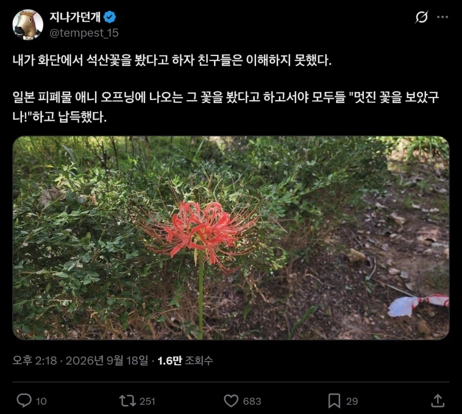

피안화는 일본에서 부르는 이름
우리나라에서는 석산(돌마늘) 혹은 꽃무릇 이라고 함

피안화는 일본에서 부르는 이름
우리나라에서는 석산(돌마늘) 혹은 꽃무릇 이라고 함
무잔 ㅂㅅ
뭐래 히간바나거든?
플로로
일반인: 저게 뭔데?
식물잘알: 석산
씹덕: 피안화
지개 신작 좀
무잔 ㄹㅇ 100년만 존버했으면 지금 그냥 개붕이들처럼 새벽까지 컴퓨터나 폰으로 커뮤하고 낄낄대면서 놀았을텐데 불쌍하네
난 꽃무릇으로 알고있었지 ㅎㅎ
꽃무릇
낮에 피는 꽃을 천년간 밤에 찾아다니는건 병신이 맞아
거미백합이잖아
피안화 갑옷
뭐야 피안화가 정식명칭인줄
석산화구나
이름이 ㅈㄴ 많은 꽃
아파트 화단에 엄청 피어있더라
밑에 꽃무릇(돌마늘)이라고 적혀있어서 이름을 암
플로로는 사실 학살따위 하지 않았다. 그저 금주의 못된 인간들이 공격하여 자기방어를 했을 뿐이다
다들 인류가 이 소설을 보기 위해서 탄생한 죽깨수의 작가
돌마늘을 몰랐단 말이냐?
돌마늘 네이노오옴
상사화
친척인듯 상사화는 꽃이 더 큰듯
상사화에 포함이 되는거
상사화속 석산이니까 상사화에 포함되는거네
호랑이가 표범에 포함되듯이
한국이름 상사화 아냐?
보통 헷갈리는데 다르긴 해
붉은 상사화라고 부르기도 해서ㅋㅋㅋ
꽃과 꽃잎이 만나지 못한다고 해서
상사화라는 이름으로 소설에서 자주 등장하는데
뭔 근산이여
더 석산보다 알려진 이름으로 꽃무릇도 있고
저거 피안화라고 하는 애들은 씹덕
공원같은곳에선 꽃무릇이라고 많이 써있음
서천꽃밭에서 나는 소생꽃
상사화라고 알려진 비운의 꽃.
불교꽃
그런데 왜 일본 작품의 한국 공식 번역에서도 꽃무릇, 석산이라고 번역 안 하지? 귀칼의 푸른 피안화도 그렇고.
씹덕들이 못 알아먹을 거라고 생각해 눈높이 맞춤 번역해주는 건가.
피안화가 뭔가 멋져보이잖아
벡터맨 호랑이! 라고 안하는거랑 비슷한게 아닐까
푸른 피안화를 찾거라
피안화(彼岸花). 우리나라 정식명칭은 석산이다. 꽃무릇이라고도 부른다. 백합목 수선화과로 '지옥의 꽃', '죽은 이의 꽃'이라고도 알려져 있다. 피안화라는 이름은 일본 이름인데 가을의 피안 시기(춘분이나 추분 전후 각 3일간을 합한 7일간, 또 그즈음의 계절)에 피어난다고 해서 그런 이름이 붙었다. 또, 잎이 나와 있다가 5월경이 다 말라버리고 죽은 듯 여름을 지내고 가을이 되면 초록색 꽃대가 쑥 자라서 다시 붉은 꽃을 피우는 특이한 행태를 가지고 있는데, 이런 삶 자체가 현생의 고통에서 벗어나는 열반의 세계에 드는 것 같아서 피안화라고 부른다는 이야기도 있다. 꽃과 잎이 다른 시기에 나와서 서로 만나지 못한다는데서 만나지 못하는 사랑이라는 이미지도 있다. 국내 이름인 석산은 돌틈에서 나오는 마늘종 모양 때문에 그런 이름이 붙었다. 뿌리도 마늘과 비슷한 모양의 구근이다.
비늘줄기에 독성이 강해서 잘못 섭취 시 중추신경 마비로 사람조차 사망에 이르게 할 정도로 무서운 독성을 가지고 있다. '리코리스 리코일'이라는 일본 애니에서 작중 아이캐치 장면(애니메이션 중간에 광고를 삽입하기 위해 잠시 쉬어가는 표지그림)에 피안화를 물고 있는 장면을 그렸다가 실제 사람들이 그 그림을 보고 따라할 수 있을 수 있다는 지적에 따라 급하게 변경하고 사과문을 올린 적이 있다. 그런데 한방에서는 해열, 거담, 통증완화제로 사용하고 항암 성분도 있다고 한다. 화려한 모양과 군집으로 피어나면 매우 아름다운 특성 때문에 그림이나 일러스트의 소재로도 많이 사용된다.
일본에서는 논둑이나 물가에 많이 심는데 쥐나 두더지, 벌레 같은 동물을 쫓는 용도로 사용되었다. 지렁이가 피안화를 싫어해서 근처에 오지 않기 때문에 지렁이를 먹는 두더지도 오지 않는다고 한다. 독성이 있지만 꽃은 데쳐 먹으면 먹을 수 있기 때문에 텐메이 대기근 때 사람들이 닥치는 대로 뽑아 먹어서 텐메이 대기근을 상징하는 꽃이기도 하다. 우리나라는 절에서 많이 길렀는데 꽃의 전분을 이용해 풀을 쑤어 탱화 등을 그리는 데 사용했다고 한다. 절에 많이 심는 데다 일생을 홀로 살아야 하는 스님의 신세를 닮았다 해서 중무릇이나 중꽃이라고도 불렸다. 전분 성질을 이용해 책을 엮을 때 접착제로도 사용했다고 한다.
인도에서는 이 꽃을 지상의 마지막 잎까지 모두 말라죽고 난 다음에야 화려한 영광의 꽃을 피운다 하여 만수사화라고 불렀으며, 일본에서는 피안화의 붉은 색에서 연상하여 피안화를 집안에 들이면 불이 난다는 설화가 있는데 피안화의 독성 때문에 아이들에게 피안화를 만지지 못하게 하기 위해 지어낸 이야기가 아닐까 하는 이야기가 있다. 무덤 주변에도 많이 나는데 위에서 언급한 대로 두더지나 야생동물이 무덤을 파헤치지 못하는 용도로 심었는데, 무덤 주위에 피안화가 많이 핀 것을 보고 피안화의 독성과 겹쳐져서 죽음의 꽃 이미지가 생긴 것이라는 설도 있다.
나도 피안화라 부르고 다녔는데 석산
로로꽃
돌마늘 연재 하라고
플로로바
리코리스
피안화가 정식명칭인줄
한국이름이 따로 있구나